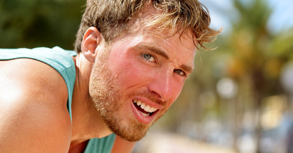
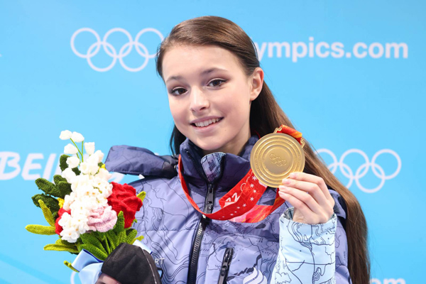
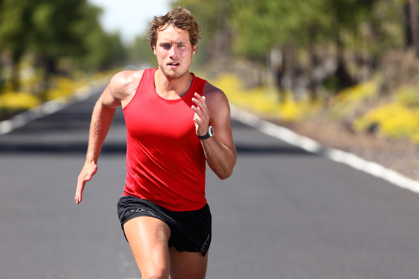
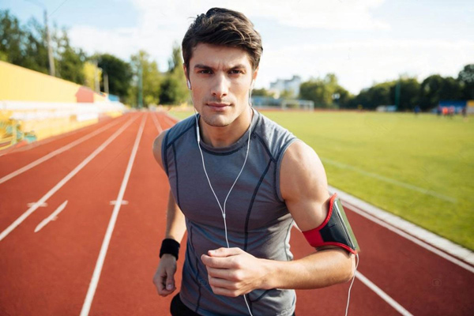
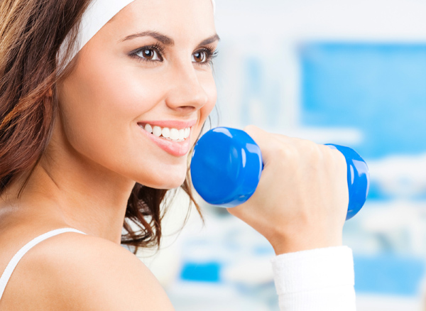

Доска почёта
Мы гордимся нашими членами клуба для любителей бега и хотим поделиться с вами некоторыми из наших лучших спортсменов. Эти люди продемонстрировали не только свои физические способности, но и невероятную стойкость и мотивацию.
|  | Самый быстрый бегун: Иван Иванов, завершил марафон за 2 часа 15 минут. |
| Самая выносливая бегунья: Елена Петрова, завершила 10 марафонов за год. |
 |
|  | Самый активный участник: Александр Сидоров, бежит 5 раз в неделю и участвует в каждом виртуальном забеге. |
| Самый молодой спортсмен: Михаил Сергеев, завершил свой первый марафон в возрасте 16 лет. |
 |
|  | Самый мотивированный участник: Анна Андреева, прошла путь от новичка до профессионала за 2 года. |